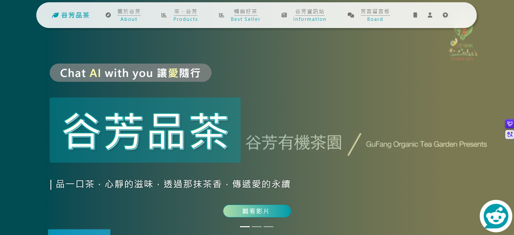
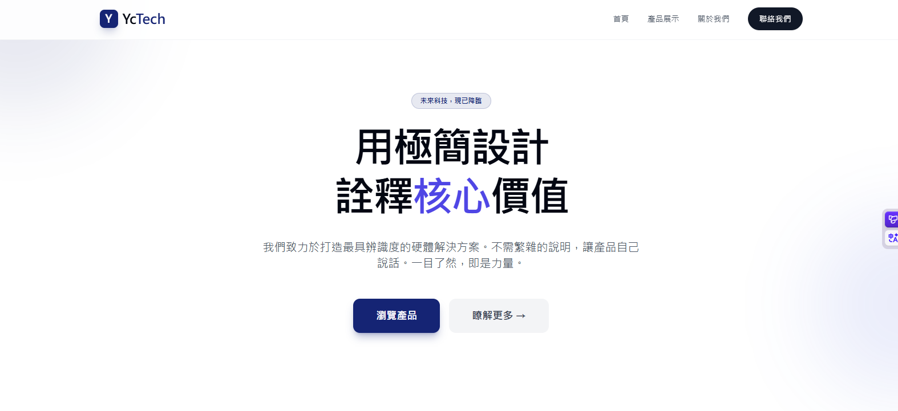
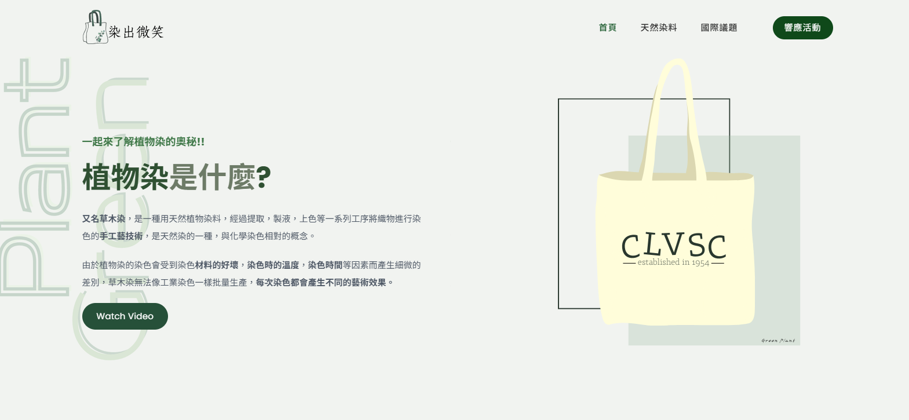
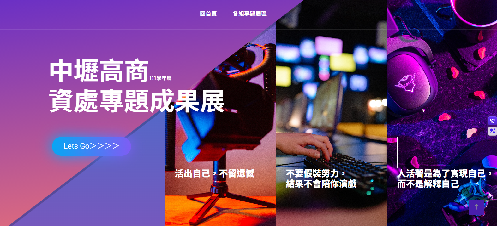

連續兩年奪冠不只是運氣，而是對使用者行為、視覺平衡與尖端技術整合的極致追求。
設計不應只是裝飾。透過使用者流向分析，讓您的產品在幾秒鐘內抓住訪客的心。
跨越視覺邊界，精準轉換各種設計語彙，確保最終產出不僅獨特，更具備無可替代的品牌辨識度。
WORKS / 2023-2025

此作品聚焦於沉浸式交互體驗，透過動態視覺策略精準捕捉閱聽大眾與評審的目光。

此作品採用極簡主義美學，輔以深邃的藍紫漸層配色，在簡練的視覺層次中精準形塑出品牌的高端專業感與技術深度。

此作品將傳統藍染工藝深度結合SDGs永續目標，現代極簡的設計與高質感的動態交互。

此作品運用大膽配色及獨特的像素遊戲風格，打造出屬於111屆獨有的數位冒險樂園。